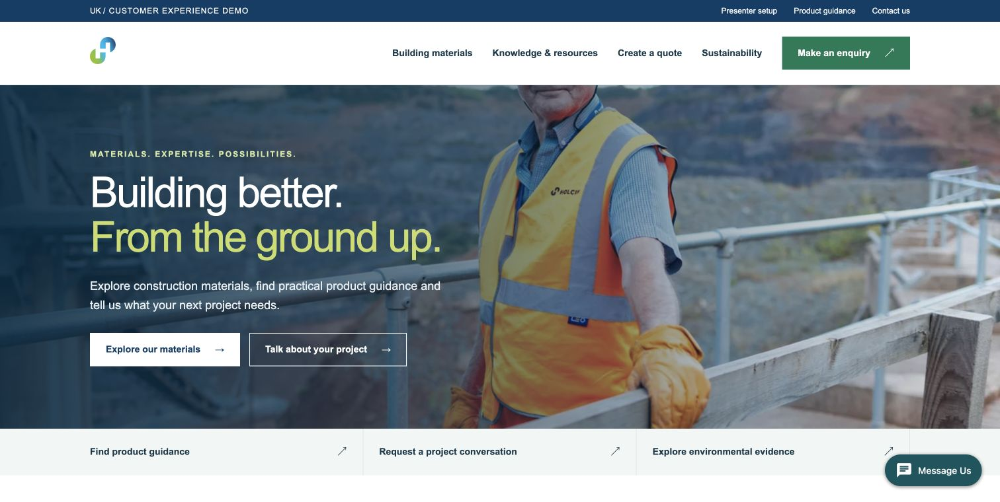

Open playback ↗Holcim customer journeys
Website enquiry to callback, webchat through Copilot assistance to a quote, and a simulated voice enquiry with AVA.
The demo library
Explore the complete experience in an abbreviated playback. Captures and labelled simulations show the customer and agent journey.
Demos available
Open a playback and use the arrow keys to move through the journey.
Ready to replay

Open playback ↗Website enquiry to callback, webchat through Copilot assistance to a quote, and a simulated voice enquiry with AVA.
 Open playback ↗
Open playback ↗A prerecorded caller and AVA illustrate project qualification and adviser handoff.